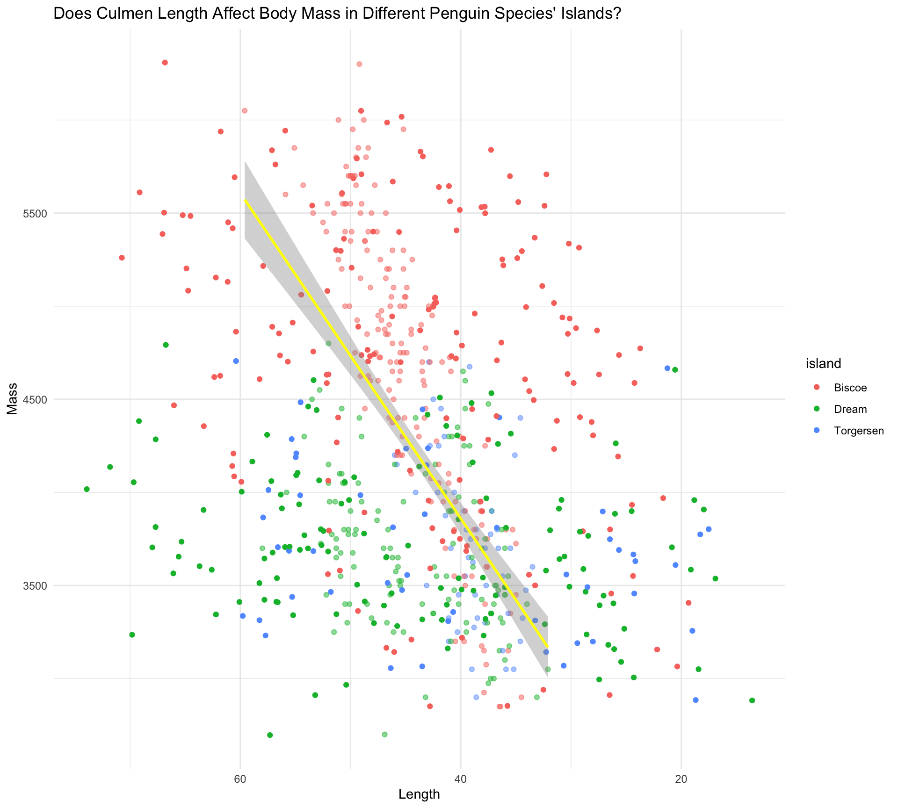
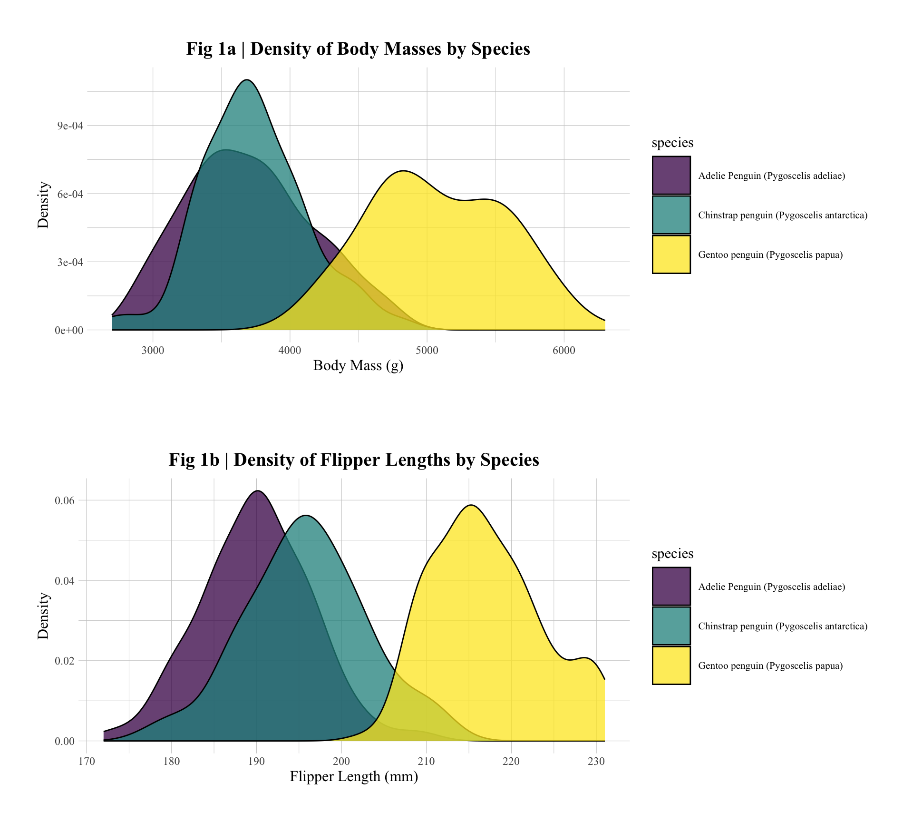

QUESTION 01: Data Visualisation for Science Communication
Initially, I will be using the Palmer Penguin dataset to build a misleading graph. This firstly requires appropriate loading and cleaning of the data. My code is as follows:
renv::restore() #stores appropriate versions of libraries used
- The library is already synchronized with the lockfile.
### download necessary libraries library(boot)library(dplyr)library(here)library(hrbrthemes)library(ggplot2)library(gridExtra)library(janitor)library(palmerpenguins)library(ragg)library(svglite)library(tidyr)library(tidyverse)library(viridis)library(yaml)#turning the palmer penguins raw data into a csv file, and storing it in a folder "data", available in my Project and GitHub Repository: write_csv(penguins_raw, here("data", "penguins_raw.csv")) #reading in the csv file: penguins_raw <-read.csv(here("data", "penguins_raw.csv"))#creating a piped function to clean the penguin data, available in a folder "functions" in my Project and GitHub repository:source(here("functions", "cleaning.R"))#assign the cleaned datapenguins_clean <-cleaning_penguins(penguins_raw) #writing a csv with the new, cleaned data:write.csv(penguins_clean, here("data", "penguins_clean.csv"))
My misleading graph is the following:

Misleading Graph
Having data visualised graphically is imperative for data communication, and 91% of respondents in a survey agree that figure use increases reproducibility (Evanthia Kaimaklioti 2021). In order to make a plot which is correct, but badly communicates the underlying data, I made a series of design choices in the generation process to mislead the reader. I chose to visualise the relationship between culmen length (measured in mm), and body mass (measured in grams). However, the axes titles I used were highly generalised to “Length” and “Mass”, without their units, in order to minimise the possibility of appropriate interpretation. This is deemed a critical flaw for reproducibility (Tufte 2001).
I chose to build a scatter plot - which are generally used to represent a relationship between two continuous variables. However, I gave the title “Does Culmen Length Affect Body Mass in Different Penguin Species’ Islands”; intimating a causal study, when in fact the visualisation produced is purely correlational (Wickham 2023a). I added a regression line to the plot, and there is no annotation on the graph to show whether the slope is significant. With regards to the axes, I reversed Length on the x-axis, in order to mislead a reader on initial assessment into perceiving the correlation as negative when it is actually positive. This is a form of “spatial orientation violation”, which is highly detrimental to reproducibility, as most viewers must make at least two attempts to divine the correct meaning from the graph (Nguyen 2021). I also increased the “jitter” to 20. This added a significant amount of random noise to the plot. Visually spreading out the points extended them past the linear regression, making it even harder to interpret.
Moreover, I chose to subset the data with regards to Island, as different species of penguin are found on different islands. Specifically, Adelaides are found on all islands, Gentoos only on Biscoe and Chinstraps only on Dream. As such, information about species cannot be divined from visualisations of islands, as is implied by the title. Finally, islands were colour-coded using a very colour-blind unfriendly palette, including simultaneous use of reds and greens.
QUESTION 02: Data Pipeline
Introduction
The Palmer Penguins dataset records observations of foraging Adélie (Pygoscelis adeliae), Chinstrap (Pygoscelis antarcticus) and Gentoo (Pygoscelis papua) penguin species, near the Palmer Station, in the Palmer Archipelago, Antarctica. Recorded observations for each individual note the specific species, as well as the specific island (of Briscoe, Dream or Torgersen) in the Anvers region; as well as the developmental stage. Each observation is given an ID. Data collected include: clutch completion (either yes or no), the date of egg laying (YYYY-MM-DD), culmen length and depth as well as flipper length (all measured in mm), body mass (measured in grams), and sex (M/F).
In my pipeline, having loaded and cleaned my data, I will pose my questions and hypotheses, explain the statistical method I have chosen to adopt for my present analysis, explore and discuss my results (using both an exploratory and a results figure, which I will save), and ultimately conclude my analysis with reference to its wider relevance.
My question: is there a correlation between body mass and flipper length in different penguin species’ (here: Adélie, Chinstrap and Gentoo)?
Correlations between morphological traits (such as body mass and flipper length) are sometimes controlled by morphometric scaling (Shingleton 2010). Morphometrically-scaled correlations are underpinned by the study of allometry: differences in the morphological growth (Nijhout 2012). Allometry is a topic of current interest fundamentally, but also partly because morphological structure and function can exert a profound effect on an organism’s ecology.
I find penguin allometry a specifically interesting case study to run, because of the proposed effect of penguin morphology on ecology, arising from morphometric scaling. For example, we already know that Gentoo penguins, with a larger body mass and flipper length, can dive deeper to forage (McComb-Turbitt 2023). In order to explore whether this ecological phenomenon might be underpinned by morphometric scaling, investigating a potential correlation is an interesting place to start.
Hypothesis
My Null Hypothesis (H0): there is no correlation between body mass and flipper length in any of the investigated penguin species’.
My Alternate Hypothesis (HA): there is a correlation between body mass and flipper length in one (or more) of the investigated penguin species’.
To contextualise these hypotheses, under H0 (no correlation between body mass and flipper length) there would be no morphometric scaling between these morphological traits. However, under HA, there would be morphometric scaling - thus revealing an interesting allometric facet of penguin development, with potential implications for their ecology.
Stats Method
In order to test my H0, I conduct a Pearson’s correlation coefficient analysis on two numerical variables included within the Palmer Penguins dataset - body mass (measured in grams), and flipper length (measured in mm).
Pearson’s correlation coefficient is a parametric measure of the linear relationship between two numeric variables, which can range from -1 (a perfect negative correlation), to +1 (a perfect positive correlation). It is useful as an introductory point for testing Hypotheses such as mine because it is a relatively simple statistical measure that is commonly employed, and therefore well-understood (Hashash 2022a).
Pearson’s correlation coefficient has precedent for use in investigating potential morphometric scaling. For example, it has previously been used in studying correlations between human brain segregation and integration units (Li 2024).
The equation for Pearson’s correlation coefficient is given as:
To compare correlations between each species, I bootstrap the correlation coefficient estimates, in order to maximise statistical accuracy (Efron 1993a). In order to make this bootstrapping reproducible, I have set a seed in my code.
Pearson’s correlation coefficient assumes that data are approximately linear. This can be visually assessed using my results figure (Fig 2). Moreover, Pearson’s correlation coefficient assumes that data are distributed normally (Hashash 2022b). I have tested this in the Supplementary Materials section, to validate it as an appropriate statistical method for this dataset.
Results
To gain an initial appreciation of the data, but not yet to run any statistical tests, I first created an exploratory figure. Exploratory figures are important to gain an appreciation for your data, without yet subjecting them to any rigorous testing (Wickham 2023b).
Here, I generated a density figure to show the distribution of the raw data for my two variables of interest: body mass (g), and flipper length (mm).
##Firstly, I create a density plot of body masses by species body_mass_density <-ggplot(data=penguins_clean, aes(x=body_mass_g, group=species, fill=species)) +#assigning a ggplot to penguins data with my variable of interest: body mass on x axes; subset by species geom_density(adjust=1, alpha =0.75) +#density plot, smoothed to 1.0 for readability, and made slightly more transparent (0.75) for aesthetics scale_fill_viridis(discrete =TRUE, alpha =0.75) +#colour-friendly palette fills plots, made slightly transparent for aesthetics scale_color_viridis(discrete =TRUE, alpha =0.75) +#colour-friendly palette around outside, too labs(title ="Fig 1a | Density of Body Masses by Species", #graph title with figure referencex ="Body Mass (g)", #x-axis title with units y ="Density") +#y-axis title (does not require units)theme_ipsum() +#chosen for publication-quality figures theme(legend.position="right", #moving the legend to the right, for readability plot.title =element_text(hjust =0.5, vjust =0, size =15, face ="bold", family ="Times New Roman"), ### adjusting axes titles, text and legends for aesthetic spacing (central location), larger font size and emboldened for readability, publication-quality font chosenaxis.title.x =element_text(hjust =0.5, size =12, family ="Times New Roman"),axis.title.y =element_text(hjust =0.5, size =12, family ="Times New Roman"),axis.text.x =element_text(size =9, family ="Times New Roman"),axis.text.y =element_text(size =9, family ="Times New Roman"),legend.key.size =unit(1.1, "cm"),legend.title =element_text(size =11.5, family ="Times New Roman"),legend.text =element_text(size =8, family ="Times New Roman"))## Next, I create the same plot, but for flipper length. flipper_length_density <-ggplot(data=penguins_clean, aes(x=flipper_length_mm, group=species, fill=species)) +geom_density(adjust=1, alpha =0.75) +scale_fill_viridis(discrete =TRUE, alpha =0.75) +scale_color_viridis(discrete =TRUE, alpha =0.75) +labs(title ="Fig 1b | Density of Flipper Lengths by Species", x ="Flipper Length (mm)", y ="Density") +theme_ipsum() +theme(legend.position="right",plot.title =element_text(hjust =0.5, vjust =0, size =15, face ="bold", family ="Times New Roman"),axis.title.x =element_text(hjust =0.5, size =12, family ="Times New Roman"),axis.title.y =element_text(hjust =0.5, size =12, family ="Times New Roman"),axis.text.x =element_text(size =9, family ="Times New Roman"),axis.text.y =element_text(size =9, family ="Times New Roman"),legend.key.size =unit(1.1, "cm"),legend.title =element_text(size =11.5, family ="Times New Roman"),legend.text =element_text(size =8, family ="Times New Roman"))## Now, I print them both as a mutli-panel figuregrid.arrange(body_mass_density, flipper_length_density, nrow =2)

Fig 1: an exploratory figure. | Fig 1a shows the density plot for Body Mass. | Fig 1b shows the density plot for Flipper Length.
Density plots are useful because of their estimate of the probability density function. This produces a smooth curve, from which it is easy to perceive data distribution.
Fig 1a shows body mass (g) on the x-axis, and density (the smoothed distribution of the continuous data) on the y-axis. Here, we can perceive overlapping densities of body masses between the 3 species, illustrating that the penguins exhibit similar overall body masses. However, a rough hierarchy emerges with regards to increasing body mass: Gentoo (yellow) > Chinstrap (teal) > Adélie (purple).
Fig 1b recapitulates a similar pattern. Here, we have flipper length (mm) on the x-axis, and density on the y-axis. Despite density overlap, an approximate hierarchy of increasing flipper length of Gentoo > Chinstrap > Adélie also emerges.
Hence, according to our exploratory Figure, all 3 species of penguin are morphologically similar with regard to their body mass and flipper length. However, a slight hierarchical pattern emerges.
For reproducibility, it is important that the figures as I have generated them under this current investigation are saved and kept, for maximum transparency (Schwab 2022a). They can be found in the “figures” folder of my Reproducible Figures Project, and in my GitHub repository, here: Reproducible Figures GitHub Repository. I give the code for my figure-saving function, which itself is also saved in the “functions” folder of my Reproducible Figures Project and GitHub Repository, below:
## In order to save this figure, I create another function, available in the "functions" folder of my Project, and in my GitHub Repository: source(here("functions", "saving_figures.R"))## Then call this function with regard to the exploratory figure:save_figure_png(body_mass_density,here("figures", "Figure1_body_mass_density_plot.png"), size =50, res =500, scaling =2)
quartz_off_screen
2
save_figure_png(flipper_length_density,here("figures", "Figure1_flipper_length_density_plot.png"), size =50, res =500, scaling =2)
quartz_off_screen
2
Having gained a species-specific appreciation for the body mass and flipper length data, we can now ask the question:
Are the morphological traits of body mass and flipper length correlated?
To test this, I conduct a Pearson’s correlation coefficient analysis.
## Firstly, I extract the correlation coefficient and associated p-values from the cleaned penguin data, subset by speciescorrelation_data <- penguins_clean %>%group_by(species) %>%summarize(correlation_coefficient =cor(body_mass_g, flipper_length_mm, use ="complete.obs"), #removed any rows with NA, which would prevent the correlation calculationp_value =cor.test(body_mass_g, flipper_length_mm)$p.value) %>%as.data.frame() #organise as a table## Then, I use the knitr package to create a more readable table. This requires 25 digits to display a comparative p-value for Gentoo; it being so small. I add a title, for further readability. knitr::kable(correlation_data, format ="markdown", digits =25, caption ="Species Correlation Coefficients and Associated p-values")
Species Correlation Coefficients and Associated p-values
species
correlation_coefficient
p_value
Adelie Penguin (Pygoscelis adeliae)
0.4682017
1.343265e-09
Chinstrap penguin (Pygoscelis antarctica)
0.6415594
3.748130e-09
Gentoo penguin (Pygoscelis papua)
0.7026665
1.330279e-19
Correlation Test
Here, our table output shows a positive correlation coefficient for each of the 3 species, between body mass and flipper length. Moreover, each of these positive correlations is highly significant under the Pearson’s correlation coefficient analysis. This is shown by each of their associated p values being <0.05, the conventionally utilised alpha significance level (Schwab 2022a).
Correlations are more easily appreciated under visualisation. To facilitate this therefore, I built a scatter plot results figure, displaying the correlation between body mass (g) and flipper length (mm), for each species.
## To create my Results Figure, I will generate a scatterplot of flipper length against body mass by species, showing the linear correlation with a regression line and 95% CIs for each species, and print the significant p-values atop this. results_figure <-ggplot(penguins_clean, aes(x = body_mass_g, y = flipper_length_mm, color = species)) +geom_point(size =2.5, alpha =0.75) +geom_smooth(method ="lm", se =TRUE) +scale_color_viridis_d() +labs(title ="Fig 2 | Scatter Graph of Flipper Length Against Body Mass, Coloured by Species",x ="Body Mass (g)",y ="Flipper Length (mm)",color ="Species" ) +theme_minimal() +scale_x_continuous(limits =c(2500, 6500)) +#set the limits of the x axis, for readabilityscale_y_continuous(limits =c(160, 240)) +#ditto for the y axistheme(plot.title =element_text(hjust =0.5, face ="bold", size =18, family ="Times New Roman"),axis.title =element_text(face ="bold", size =17, family ="Times New Roman"),axis.text =element_text(size =12, family ="Times New Roman"),legend.key.size =unit(0.3, "cm"),legend.position ="bottom",legend.direction ="horizontal",legend.title =element_text(size =15, family ="Times New Roman"),legend.text =element_text(size =12, family ="Times New Roman") ) +#the following code pastes on our species-specific p-values, in an appropriate place on the graph, for interpret- and readability annotate("text", x =5500, y =190, label =paste("Adelie: p =", format(correlation_data$p_value[1], scientific =TRUE)),size =4, hjust =0, fontface ="bold", colour ="purple") +annotate("text", x =5500, y =185, label =paste("Chinstrap: p =", format(correlation_data$p_value[2], scientific =TRUE)),size =4, hjust =0, fontface ="bold", colour ="blue") +annotate("text", x =5500, y =180, label =paste("Gentoo: p =", format(correlation_data$p_value[3], scientific =TRUE)),size =4, hjust =0, fontface ="bold", colour ="black")#finally, paste the figureresults_figure
Fig 2, results figure. A scatter graph of flipper length (mm) against body mass (g), with regression lines and 95% CIs for each colour co-ordinated species.
Figure 2 is a scatter plot which shows body mass (g) on the x-axis, and flipper length (mm) on the y-axis. Each species is colour co-ordinated such that purple shows Adélie penguins, blue shows Chinstrap penguins, and yellow shows Gentoo penguins. Scatter plots are useful because they can facilitate easy perception of correlations between two numerical variables.
Each of the species of penguin demonstrates a positive correlation between these two variables, which can be assessed visually, by use of the species-specific regression lines. 95% confidence intervals (CIs) surround these regression lines in shaded grey, in order to visually quantify the certainty of the correlation. Here, the certainty is high.
Notably, a Pearson’s correlation coefficient also assumes an approximately linear relationship between variables (Hashash 2022c), which can be verified using the linear regressions applied to this scatter plot. The significant p-values for each species are annotated onto the plot, for ease of visual appreciation. The Gentoo p-value must be displayed in black as opposed to yellow, for readability.
Clearly, this results plot exemplifies the positive correlation between body mass and flipper length for all 3 of the penguin species. To link this back to my hypotheses, here we can see that H0 (a hypothesis of no correlation between body mass and flipper length for any of the penguins) is statistically disproven, allowing us to reject it. We have evidence that indicates morphometric scaling of body mass and flipper length in these penguin species.
Once again, it is important for maximum reproducibility that there is a saved copy of my generated Figure 2 (Schwab 2022b). I save it to the “figures” folder of my Project using the following code. It can also be found in my Reproducible Figures GitHub Repository.
## I reuse the previously made function to save the results figure: save_figure_png(results_figure,here("figures", "Figure2_scatter_plot.png"), size =30, res =100, scaling =1)
quartz_off_screen
2
It is clear that there exist positive correlations between body mass (g) and flipper length (mm) for all 3 penguin species.
Do these correlations significantly vary between the species?
In order to address this question, it is best practice to bootstrap our Pearson’s correlation coefficient estimates, to maximise our chances of achieving statistical accuracy (Efron 1993b).
## For my boostrapped correlation test, I first define a function, which is saved in the functions folder of my Project and GitHub Repository, for ease of access. source(here("functions", "bootstrapping.R"))## Next, I run the bootstrapping for each species using this function. I set a seed to ensure reproducibility. bootstrap_results <- penguins_clean %>%group_by(species) %>%do({set.seed(2963) res <-boot(data = ., statistic = correlation_function, R =1000) #repeated 1000 times, according to convention from the literature ci_lower <-quantile(res$t, 0.025) #calculating the lower bound of the 95% CI ci_upper <-quantile(res$t, 0.975) #calculating the upper bound of the 95% CIdata.frame(correlation =mean(res$t), ci_lower = ci_lower, ci_upper = ci_upper) }) #outputting the result as a table# Building a nicer looking table, for readibility. 4dp again chosen for scientific precision. Appropriate title given. knitr::kable(bootstrap_results, format ="markdown", digits =4, caption ="Correlation Coefficients + 95% CIs for Bootstrapped Data")
Correlation Coefficients + 95% CIs for Bootstrapped Data
species
correlation
ci_lower
ci_upper
Adelie Penguin (Pygoscelis adeliae)
0.4700
0.3476
0.5741
Chinstrap penguin (Pygoscelis antarctica)
0.6453
0.5138
0.7522
Gentoo penguin (Pygoscelis papua)
0.7058
0.6126
0.7858
Bootstrapped Correlation Test
The results of this bootstrapping of our Pearson’s correlation coefficient estimates show that all 95% CIs overlap between species. As such, we can infer that there is no significant difference in the strength of the positive correlation between body mass (g), and flipper length (mm), across these 3 different species of penguin.
Discussion
Initially, I generated an exploratory figure of density plots for both body mass and flipper length, between all 3 species of penguin. It is clear that they display similar body masses and flipper lengths. However, an approximate hierarchy emerges that is recapitulated between both morphological traits, where Gentoos are the largest, Chinstraps are intermediate and Adélies are smallest. The overlapping densities would indicate that this is not significant, and as it is an exploratory figure, no formal statistical analysis was conducted.
My Pearson’s correlation coefficient analysis outputted a highly significant correlation between body mass and flipper length for each of the 3 species, which is easily visualised using Fig 2. This allows me to reject H0, and is indicative of morphometric scaling between the morphological traits of body mass and flipper length in each of the 3 species.
Finally, I tested whether there was a significant difference in the strength of any of the correlations between the 3 species. Due to overlapping 95% confidence intervals of the bootstrapped Pearson’s correlation coefficients, there is no evidence to suggest this.
Taking all of this evidence together, we can infer that morphometric scaling does occur between body mass and flipper length for each of these 3 penguin species, and to a similar degree. As such, this does not support the proposition that morphometric scaling affects the ecology of these species’. Perhaps the ecological differences we observe, such as the ability of Gentoo penguins to forage deeper, arise from alternative sources: such as physiological differences. The testing of this hypothesis would require its own data collection and analysis.
Conclusion
The study of allometry, and the correlations that arise due to morphometric scaling, is highly important in biological science. Understanding the “patterns of design” that constrain morphology is fundamental to developmental scientists, and the potential ecological repercussions of evolutionary changes in morphometric scaling are exciting (Shingleton 2010). This present study has confirmed evidence of morphometric scaling 3 species of penguin: Gentoo, Chinstrap and Adélie; but finds no evidence of a change in this scaling between species that could be proposed to have an ecological effect. Potential studies in other species, or investigating other scaled morphological traits, would further plumb this scientific line of inquiry. The application of universal principles of structure and function can link both development and ecological biology in an exciting way, and this is being appreciated in a recent burst of publications investigating such relationships (Shingleton 2010).
Supplementary Material
Pearson’s Correlation Coefficient requires data to be normal
This can be tested using visual assessment of QuantileQuantile (QQ) Plots.
QQ plots compare the quantiles of the data in our sample (on the y-axis) to the theoretical quantiles of a normal distribution (on the x-axis), in order to investigate the extent to which these align. Complete alignment would indicate totally normal data.
## In order to appropriately apply a Pearson's correlation coefficient, the data must be normal. I check this using a QQ Plot. #the initial QQ plot to test the normality of the body mass data, given an appropriate title, and summarised in red by convention qqnorm(penguins_clean$body_mass_g, main ="QQ Plot for Body Mass (g)")qqline(penguins_clean$body_mass_g, col ="red")
QQ plots for testing normality
## Next, I test the normality of the flipper data, using the same format. qqnorm(penguins_clean$flipper_length_mm, main ="QQ Plot for Flipper Length (mm)")qqline(penguins_clean$flipper_length_mm, col ="red")
QQ plots for testing normality
Both of our QQ Plots align relatively well with normality. Both show slight deviation at the extremes, known as kurtosis. However, this kurtosis is not extreme enough to invalidate the use of the Pearson’s correlation coefficient for this dataset. It is therefore deemed appropriate.
QUESTION 03: Data Visualisation for Science Communication
Part a)
I have uploaded my RProject to GitHub: Repository Link
N.B. two contributors are noted for this repository: daisyjeans and daisyjeans2. Both contributors are myself.
What elements of your partner’s code helped you to understand their data pipeline?
My partner’s code frequently used annotations excellently.
For example, annotations were sometimes used directly above code, in order to “introduce” it. When reading the code, this means that I did not have to puzzle over what it meant, as I was reading the code already having an idea of what it was going to do.
Annotations were also occasionally used within the code, to explain small inclusions (such as which =2). This extra detail made me, a person unfamiliar with that specific coding sequence, understand it better.
Occasionally, small paragraphs of annotation were also used, which were excellent at moments of transition in the data pipeline, keeping me fully up to date on the trajectory of the code.
Annotations was also implemented to explain both the statistical input, and the data output, which I thought was a nice touch. For example, explaining what a QQ plot is, just in case the reader was not aware. Moreover, explaining an outputted histogram skew, to keep me following the trajectory of the pipeline.
Annotations also explained the choices of the coder, which I thought was excellent added detail. For example, they refer to the coding decisions they have made to maximise reproducibility, which is highly informative, and reassuring.
My partner’s code had excellent use of functions.
For example, their function to clean the data was appropriately named (“penguins_clean”), and stored in a “functions” folder, such that it could be easily accessed in their Project and GitHub repository. It was also referenced in their detailed read.me file in their GitHub Repository, so I knew where to find it.
My partner’s code was highly organised.
The generating of folders such as the aforementioned “functions”, and also a “data” folder where the original data could be preserved as a read-only file. This is excellent from a reproducibility perspective. A folder was also created for “figures”, which is highly beneficial from a reproducibility perspective, too.
My partner’s code was, for the most part, highly reproducible.
They used the here() path to avoid setting a working directory, which meant I was less likely to suffer errors in using their data.
My partner’s code used objects well.
The naming of objects were frequently very apt. For example, the name of the object gentoo_dataset, when specifying to just one species, was very sensible, and clearly explained at this transition. Another example is gentoo_lm_unlogged; the use of “unlogged” was wise, as having both logged and unlogged data at this point in the pipeline necessitated extra specificity, to maximise clarity.
Did it run? Did you need to fix anything?
My partner’s code ran fine, and I did not need to fix anything.
What suggestions would you make for improving their code to make it more understandable or reproducible, and why?
Improving annotations:
In my opinion, some extra annotations would have been helpful, to thoroughly guide me through the code. For example, the initial library loading section is not annotated.
Abbreviations were also occasionally used, which could potentially lead to confusion. An example is “homo” instead of “homoscedasticity”.
Object naming:
There were two objects whose names I felt could have been more specific to their use. The first was gentoo_explorplot (explor is abbreviated, and therefore potentially confusing). The second was gentoo_resultsplot; although this is indeed generating a results plot, I felt it would have been better to clearly label it with the direct plot being produced: a scatter graph.
Redundant code:
Occasionally code was repeated, such as colnames(penguins_raw).
Improving reproducibility:
In order to improve the reproducibility of this code, I would avoid using the install.packages(““) function. It worked on my computer, but is liable to creating errors in R.
If you needed to alter your partner’s figure using their code, do you think it would be easy or difficult, and why?
Overall, I think it would be relatively easy to alter a figure using my partner’s code. The code was well-spaced, logically ordered and easy to follow; thus making minor edits manageable. The only thing that may make it difficult was that some line-by-line annotations, such as for building the bodymass_histogram, were absent. These would be helpful, if a coder was unfamiliar with any of the lines, and needed to make a specific edit.
Part d)
What improvements did they suggest, and do you agree?
My partner suggested that my density plot chunk could have been split up for better readability. Whilst I deliberately chose to keep both graphs that produce the exploratory figure together in the same chunk to avoid potential confusion, I can appreciate how this may have been an overwhelming amount of code all at once.
My partner suggested that the coding of my body mass density plot had a paragraph-like format that was difficult to read, due to the comments spilling over lines. I took this decision deliberately due to a perceived necessity to explain my code in great detail. For reproducibility, it is my opinion that all code should be addressed and explained at least once, such that it can be interpreted by any person who wishes to interrogate my open, shared data pipeline. Since I generate two density plots, I chose to explain the first in great detail, such that with a full explanation of the code, the code for the second plot would not require this. However, this level of detail comes at a tradeoff, where my partner suggests it would make it harder to locate parts of the code to edit, on first glance. This I concur, but believe it is a tradeoff worth making, in the interests of reproducibility. My partner also suggested that indentations and tabs should be used here. They are, but due to the volume of annotation, I can see why it might look like they aren’t. Again, I feel that in this instance, at the start of the pipeline when laying out my first sections of code, it is justified. They note that the section below reads more easily – this is a consequence of not requiring such detail, it having previously been covered above.
My partner suggested that my exploratory plot should have been placed in my Introduction or Hypotheses section; and that running my statistical test should have been done inside my Statistical Methods section, as opposed to my Results section. However, I structured my data pipeline according to the recommendations of Mensch to maximise reproducibility. They stress the importance of displaying exploratory figures, and running of statistical tests, in the Results section. In order to allow the reader to gain a visual understanding of what the code is exploring at the very beginning, I could have perhaps generated a table that showed the head data for my variables of interest. (Mensch 2017)
My partner suggested that a script creating many graphs would benefit from functions generalising this code and stored elsewhere. Although I already have functions for cleaning the penguin data, saving my figures, and bootstrapping my Pearson’s correlation coefficients – I do not have any functions regarding graph generation. Moreover, since my folder for functions already exists in my Reproducible Figures Project, and GitHub Repository, I feel that this would be both a beneficial, and relatively simple addition to improve my code.
What did you learn about writing code for other people?
I have learnt the importance of structure. Using chunks helps to deliver code in a palatable way to an interested reader, such that they do not get overwhelmed. This is imperative from a reproducibility perspective – where any interested reader should be able to consume our open and shared data pipeline. At a micro- level, the use of tabs and indentations within code also facilitates this, as well as making any potential edits from future readers easier.
I have learnt the importance of annotation. Whilst writing code, it was easy to become overly-familiar with my own data pipeline. Annotations remind me that it is necessary for a reader who is completely unfamiliar with the topic to still be able to understand my data pipeline with clarity. As such, providing personable introductory annotations throughout, and line-by-line detail initially, helped me to achieve this.
I have learnt the importance of organisation. A data pipeline cannot be easily understood, and therefore is not reproducible, if it is unintelligibly organised. Utilising a read.me file in my GitHub repository to introduce my data pipeline; creating appropriately named folders for my data, functions and figures; and labelling chunks to track data pipeline progress helped this.
Finally, I have learnt the importance of innate reproducibility; using a “renv” instead of install.packages(““), as well as comitting and pushing my files to an open and accessible GitHub Repository, such that my data pipeline should be as accessible and transparent as possible.
Evanthia Kaimaklioti, Samota. 2021. “Knowledge and Attitudes Among Life Scientists Toward Reproducibility Within Journal Articles: A Research Survey.”Frontiers in Research Metrics and Analytics, 1st series, 6 (1): 1–18. https://doi.org/10.3389/frma.2021.678554.
Hashash, El. 2022a. “A Comparison of the Pearson, Spearman Rank and Kendall Tau Correlation Coefficients Using Quantitative Variables.”Asian Journal of Probability and Statistics., Correlations, 20. (1): 36–48. https://doi.org/10.9734/AJPAS/2022/v20i3425.
———. 2022b. “A Comparison of the Pearson, Spearman Rank and Kendall Tau Correlation Coefficients Using Quantitative Variables.”Asian Journal of Probability and Statistics., Correlations, 20. (1): 36–48. https://doi.org/10.9734/AJPAS/2022/v20i3425.
———. 2022c. “A Comparison of the Pearson, Spearman Rank and Kendall Tau Correlation Coefficients Using Quantitative Variables.”Asian Journal of Probability and Statistics., Correlations, 20. (1): 36–48. https://doi.org/10.9734/AJPAS/2022/v20i3425.
Li, J. 2024. “Morphometric Brain Organization Across the Human Lifespan Reveals Increased Dispersion Linked to Cognitive Performance.”PLOS Biology, Neurology, 22 (6): 1–24. https://doi.org/e3002647.
McComb-Turbitt, SP. 2023. “Diving Efficiency at Depth and Pre-Breeding Foraging Effort Increase with Haemoglobin Levels in Gentoo Penguins.”Marine Ecology Progress Series., Diving, 722. (1): 1–17. https://doi.org/10.3354/meps14441.
Mensch, B. 2017. “Ten Simple Rules for Structuring Papers.”PLOS Computational Biology, Structuring, 13 (9): 1–9. https://doi.org/doi.org/10.1371.
Nijhout, Frederik. 2012. “Developmental Causes of Allometry: New Models and Implications for Phenotypic Plasticity and Evolution.”Integrative and Comparative Biology, Allometry, Volume 52, (Issue 1): Pages 4352. https://academic.oup.com/icb/article/52/1/43/741331.
Schwab, S. 2022a. “Ten Simple Rules for Good Research Practice.”PLOS Computational Biology, Research practice, 18 (6): e1010139. https://doi.org/doi.org/10.1371.
———. 2022b. “Ten Simple Rules for Good Research Practice.”PLOS Computational Biology, Research practice, 18 (6): e1010139. https://doi.org/doi.org/10.1371.
Wickham, Hadley. 2023b. R for Data Science: Import, Tidy, Transform, Visualise and Model Data. 2nd ed. Vol. 1. 1st Series 2. Houston, Texas: O’Reilly Media. https://r4ds.hadley.nz.
———. 2023a. R for Data Science: Import, Tidy, Transform, Visualise and Model Data. 2nd ed. Vol. 1. 1st Series 2. Houston, Texas: O’Reilly Media. https://r4ds.hadley.nz.